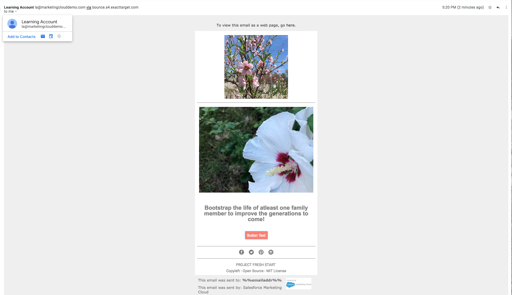
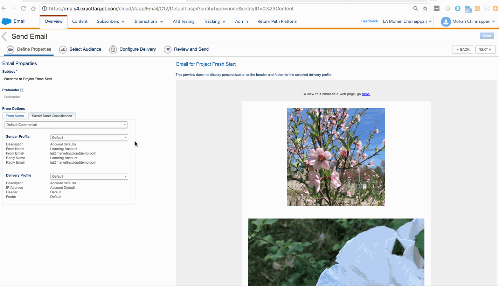
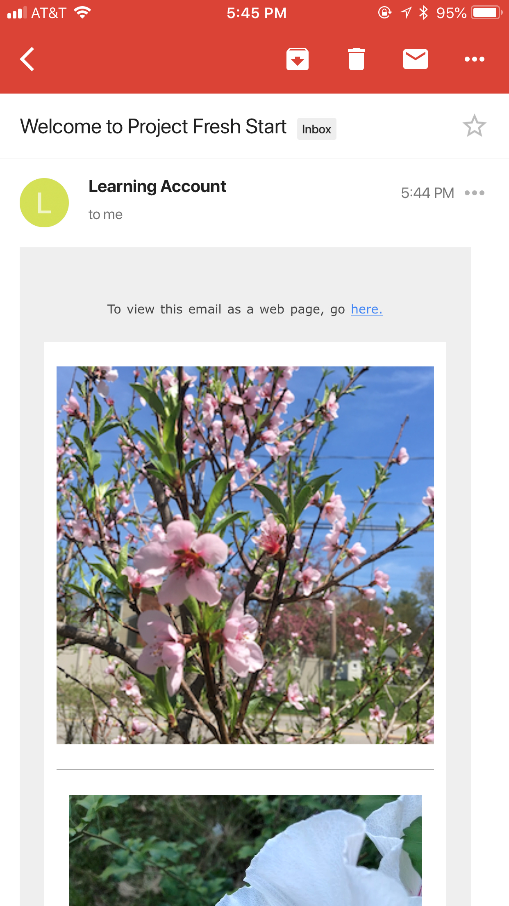
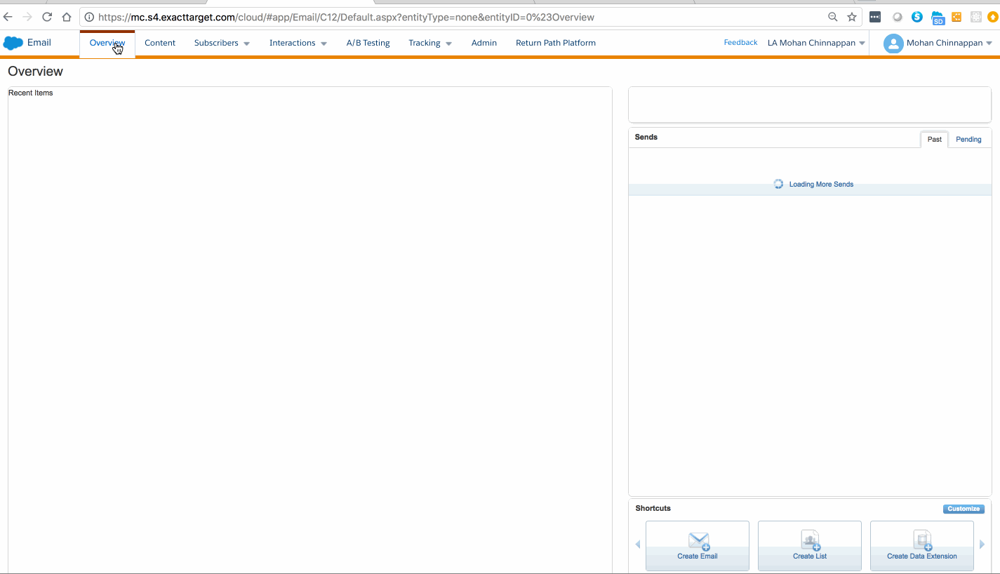

{{appName}}
Get your very own Developer EditionGrab this Workbook! :: Notes
Success with Sales Cloud - Plan → Implement → Train
- Plan
- Sales Cloud Basics
- Create Your Users
- Plan Your Implementation
- Implement
- Define Your Sales Process
- Set Up Accounts and Contacts
- Customize Salesforce
- Import and Manage Data
- Explore Salesforce Analytics
- Train
- Train Your Users
Videos covering - Plan → Implement → Train
SALES CLOUD BASICS
Create your users
-
Using Role hierarchy you can control the baseline access and visibility of your records in Salesforce
Role hierarchies ensures that users who are higher in the structure always have access to the data that people lower in the structure have access to. Role hierarchies generally mirror the structure of your org chart, though they don't have to match exactly.
We suggest that you do Create your users at the beginning so you assign your data appropriately when importing into Salesforce. - After you've created the roles, you can then assign them to users as you create them and give them access to the data they need so they can start using Salesforce.
- When creating your users, we suggest giving them a read-only profile at the beginning of your implementation. We suggest this to provide the benefit of letting users log in to train and become familiar with Salesforce.
- After you've created the hierarchies, you're ready to add users. You can do this easily by following the demonstration that we provide in next video.
- Once the users are active in Salesforce, you'll have options to help reset passwords, and when necessary, to deactivate users who are no longer in your organization.
Create Your Users
Who sees what
Plan your Implementation
-
Video-1: Guidance on choosing your key and supporting players.
Considerations when choosing your implementation path — you can take on the implementation project:
yourself or partner with a third party -
Video-2: Ways to gather feedback to drive a successful implementation.
Guidance on developing a communication plan to get the word out.
- Video-3: Identify and prioritize your business objectives and manage your success.
Your company has purchased Salesforce to achieve a certain business purpose, so you'll want to define that purpose, as well as how to measure and prove results.
Identifying pain points and capturing and prioritizing goals in a document. Once you've done this, you'll want to create a plan to measure all of this. This helps you pinpoint what's working well and identify areas in need of improvement. - Video:4: Demo the concepts we've discussed.
Plan Your Implementation - playlist
Define your Sales process
-
Leads - The handoff mechanism between marketing and sales.
Leads help facilitate qualification of potential deals. They're necessary to take advantage of the Salesforce duplicate-prevention utility.
Lead has 3 components:- Company information
- Contact information
- Information about the deal
Contacts - People associated to an account who matter to your business..
Opportunities - Potential revenue-generating sales deals that you want to track until the deal closes..
Activities - Drives your sales performance.
- Once you've determined a lead to be a valid opportunity, you can use the built-in Salesforce lead conversion feature to convert the lead.
- Building your sales process means identifying when an opportunity should be created. Once you understand how you sell and the processes you have in place, you can use this to configure your Salesforce.
Define your Sales Process
Set up accounts and contacts
-
Accounts are companies you have a relationship with and can include:
- prospects
- customers
- partners
- competitors
- Contacts are people associated with an account who matter to your business. They can include sponsors, decision makers, influencers, assistants, and partner liaisons.
- Account records represent companies that you have a relationship with. In Salesforce, you'll see the Accounts tab, which features the highlights at the top. Here, you can get the field information you need quickly. There's also a News feed that shares the latest stories relevant to that account, as well as related lists.
- Through the page layout section, you can rearrange these sections in a way that works best for you. Also, you will note the Contacts associated with each Account, which can be one or more. Simply clicking a Contact will bring up detailed information on the Contact.
- Once you've created your accounts and contacts, you'll want to create custom list views, so you can easily monitor and manage your accounts. You'll do this by simply adding filters that present the information you want to see.
Set up accounts and contacts
Customize Salesforce
- Modifying standard fields to match your organization's unique requirements
- Discussing custom fields that can be created to capture additional information that needs to be updated and tracked
- Showing you how you can customize your search layout results page to show relevant fields in the results column
- Using the Enhanced Page Layout Editor to modify the Record Detail page
- Using App Builder: a simple point-and-click tool that makes it easy to organize workspaces and record pages for the Salesforce Mobile App and Lightning Experience.
- Engaging your team of testers to validate your solution, before officially rolling out all the new customizations to your organization.
-
Using the best practices, you'll simplify Salesforce screens and layouts, which will make a huge impact on your user adoption.
- Create a new lookup field on the opportunity page to track scenarios involving a competitor.
- Add a Competitor field onto the Highlights Panel of the Opportunity record.
- Add an Account's Type field to the search results page to quickly find accounts and identify their relationship to the organization.
- Add guidance in the Opportunity Sales path to help coach sales reps on key milestones related to each sales stage. This will help improve forecast accuracy across the team.
- How to create an Opportunities by Competitor report for quick access to all the deals that are open and at risk.
Customize Salesforce - playlist
Import and Manage Data
- Best practices on preparing your source file and Salesforce for the data import process
-
Data import tools, including the Data Import Wizard and Data Loader.
- Best practices on good data management. Once data is imported, you need a strong data management strategy to make sure data stays clean and up to date. he strategy begins with training users to input quality data. Then, you'll want to standardize your data by using naming and address conventions . Finally, ensure a process for users to search on records before creating new ones - this prevents duplicate records
Import and Manage Data - playlist
Explore Salesforce Analytics
- How to up and running with reports and dashboards quickly. Reporting is a great way to see how your company is performing, but we recommend that you take this a step further. You can develop a strategic approach to generating actionable data, which can be used specifically to target improvement.
- you can tap into the rich collection of prebuilt, out-of-the-box standard reports, and customize them to fit your needs. Reports are available for most objects, including opportunities, accounts, contacts, and administrative reports.
- There are many standard reports available so you'll rarely need to create brand new reports, especially in the beginning stages of your implementation. As you get more comfortable with Salesforce and your reporting requirements evolve, you can explore some of the custom reporting options.
- The AppExchange contains key dashboards for marketing, sales, and support roles. We also have dashboards for measuring overall adoption of your Salesforce instance. We want to note that these were built by Salesforce experts, so you can start using dashboards right away.
Explore Salesforce Analytics - playlist
Train Your Users - Videos
-
Video-1: About User adoption - will take you through best practices of and considerations when creating your training plan.
We'll also go over resources on helping your administrators get trained and certified.
And we'll give you tips to support, motivate, and engage your users. - Video-2: will provide best practices for tracking and measuring success and achievement of business outcomes, where to find valuable prebuilt dashboards on the AppExchange to jump-start your metrics, how to assess user sentiment through surveys or Chatter polls, and the importance of validating your metrics and dashboards with end users.
-
Video-3: how to train your users. We'll go over the concept of "Chatterizing" your rollout by creating a Chatter group
to enable collaboration around training and feedback.
- To start off your training strategy the right way, you'll want to include a training objective and a delivery schedule. You should also provide insight to your business objectives, so users understand what's expected of them and what they can expect in return. Enlist your executive and management teams to drive home the message.
Train Your Users - playlist
Use case - Lead creation and email
- Ken visits your company website and likes to know more details about the services offered by your company
- Ken clicks on Contact Us page in your website; enters the following data in the form in that page:
- First Name
- Last Name
- Phone
- Company
- City
- State
- Ken submits the form
- Your Contact Us page uses Salesforce Web-to-Lead feature to create Lead for Ken
- John, sales rep in your company use the leads list (subscriber list) for Email creation in Salesforce Marketing Cloud
- John puts tracking code in the email template to track: Ken has opened that email or not
- If Ken has not opened the email in 7 days, another friendly reminder email is sent to Ken
- If Ken has not opened the email in 14 days, Activity record for phone call is created for John to make a call to Ken :: Doc
Use case - case creation and email
- Ken is your customer, who purchased your product
- Ken is having problems for last few days with that product
- Ken visits your Support page and enters the following data:
- Contact Name
- Subject
- Phone
- Description
- Product
- Ken submits the form
- Your Support page uses Salesforce Web-to-Case feature to create case for Ken's product issue
- Salesforce sends email to Ken with case details with case-number and subject of the case with info that: your team will get back to Ken in 24 hours
- John, your service rep, uses Service Cloud to manage this case
Web-to-Lead and Web-to-Case
Demo: MC - Email Creation, Preview & Test

Demo: MC - Email Creation, Preview & Test - Sample Email
Demo: MC - Send to the Subscribers
Demo: MC - Send to the Subscribers - Sample Email
Demo: MC - Subscribers list
Reduce Sales Rep Ramp Time

4 Steps
- Prepare for Success
- Determine who is involved?
- How to focus your journey?
- Create User Success
- Adapt Salesforce to enable and improve your business processes
- Enable User Experience with Data
- Import clean data and create valuable reports
- Deploy and Enpower Your Users
- Train, support, motivate, and engage your users by driving business outcome
Marketing Cloud (MC)
Getting Started with Marketing Cloud
-
Start sending 1-to-1 emails from the Marketing Cloud
-
Setup Account & Subscribers
- Account Setup: How to set up your Marketing Cloud Email Studio account and user permissions
- Subscribers Setup: How to manage and segment your Subscribers
-
Setup Account & Subscribers
- Create, Test and Send emails
- Create an email that Captures your Brand's look & feel
- Test & send email
- Track your email: tracking data and extract your email metrics to optimize your email campaign.
- Marketing Cloud Connect between your Marketing Cloud account and your Sales Cloud org.